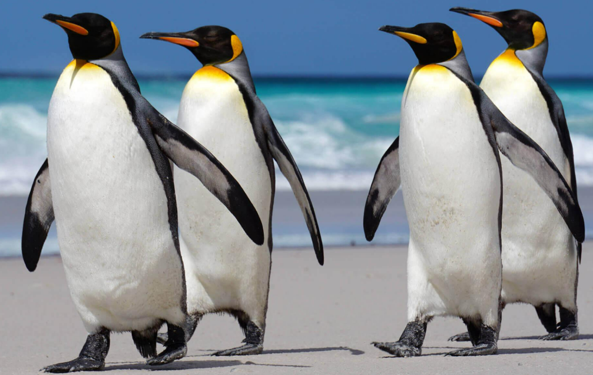
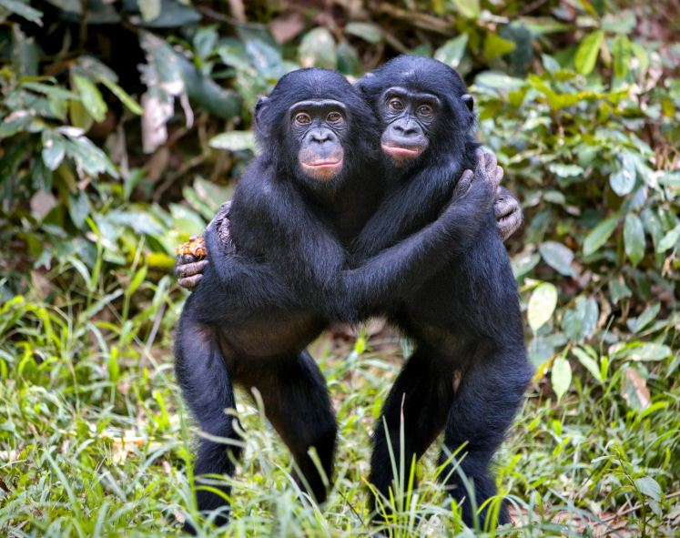
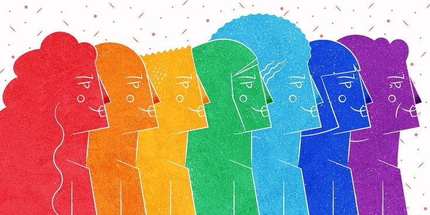

Queery
What do these colors mean? This interactive map visualizes the global Legal Equality Index. Countries in warm, light tones represent regions where LGBTQ+ identities face severe legal restrictions, while cooler, deeper tones (like deep purple and blue) highlight nations with robust protections, such as marriage equality and anti-discrimination laws.
Scroll, pinch to zoom, and tap on a country to explore its reality.
For centuries, a common misconception has framed same-sex behavior and diverse gender expressions as exclusively "human constructs" or even "unnatural." However, exhaustive biological research tells a profoundly different story. Homosexual, bisexual, and non-binary behaviors have been scientifically documented in over 450 different species across the animal kingdom. From mammals to birds, diversity is a fundamental, naturally occurring feature of life on Earth.

In nature and zoos globally, same-sex penguin couples are frequently observed courting, building nests, and successfully incubating and raising abandoned eggs together, proving their capability for lifelong partnership and parenting.
Source: Biological Exuberance, B. Bagemihl (1999)
As one of humanity's closest living primate relatives, nearly all individuals in bonobo societies exhibit bisexual behavior. They utilize same-sex intimacy to resolve conflicts, share resources, and maintain profound social peace.
Source: Biological Exuberance, B. Bagemihl (1999)Intimate behavior between male giraffes is exceptionally frequent. In some wild populations, over 90% of mounting and affection-building behaviors occur between males, often involving gentle neck-rubbing.
Source: Biological Exuberance, B. Bagemihl (1999)The uprising at the Stonewall Inn in New York marked the true awakening of the modern LGBTQ+ rights movement and is the origin of global Pride Month.
On May 17th, the World Health Organization officially removed homosexuality from its list of mental illnesses (now recognized as IDAHOBIT).
The Netherlands formally passed legislation becoming the first country in the world to allow same-sex couples to legally marry.
Taiwan passed a special law for same-sex marriage, becoming the first region in Asia to legalize it.
Pronouns are the words we use to refer to people instead of their names (e.g., he, she, they). Respecting someone's correct pronouns is not just about basic courtesy; it is the starting point for creating a safe and inclusive space.
Today, many educational institutions and modern organizations have adopted pronoun-sharing systems to normalize this practice, recognizing that honoring pronouns is a fundamental step in respecting gender diversity.

Often used by women and feminine-aligned individuals.
Often used by men and masculine-aligned individuals.
A gender-neutral option used to refer to a single person outside the traditional binary.
Alternative gender-neutral words like ze/zir or xe/xem that do not use traditional categories.
The acronym LGBTQ+ represents a beautifully diverse and intersectional community. To truly understand it, we must recognize that human sexuality and gender exist on a fluid spectrum, not in rigid binary boxes. Here is a breakdown of the core spectrum:
Refers to who you are attracted to emotionally, romantically, or sexually. It is about your internal sense of connection to others.
Refers to your deeply held internal sense of being male, female, both, or neither (e.g., Transgender, Non-binary, Cisgender). It may or may not align with the sex assigned to you at birth.
A woman or feminine-identifying person who is emotionally, romantically, or sexually attracted to other women. It represents a specific sexual orientation focused on same-sex attraction among women.
Individuals who are primarily attracted to members of the same sex or gender. While historically used to refer to men attracted to men, it is widely used today as an umbrella term for anyone experiencing same-sex attraction.
A person who has the capacity to form physical, romantic, and/or emotional attractions to those of the same gender or to those of another gender. This attraction does not have to be split 50/50, and it can be fluid over time.
Important distinction: Unlike the previous letters which describe sexual orientation (who you are attracted to), Transgender describes gender identity (who you are). It refers to individuals whose gender identity differs from the sex they were assigned at birth.
Queer is an inclusive, umbrella term reclaimed by the community to describe sexual orientations and gender identities that are not exclusively heterosexual or cisgender. Questioning refers to the completely natural process of exploring and discovering one's own sexual orientation or gender identity.
The "Plus" is perhaps the most important symbol. It signifies that the spectrum is vast, inclusive, and ever-evolving. It explicitly includes all other identities not covered by the five initials, such as Pansexual, Asexual, Non-binary, and Intersex.
Details go here.